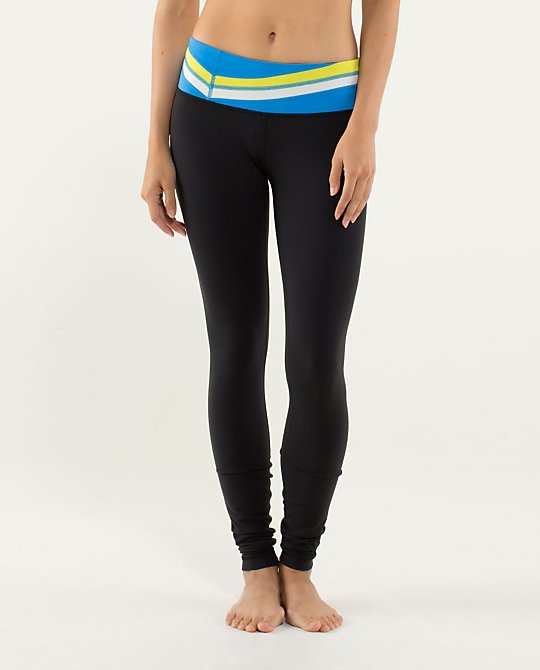
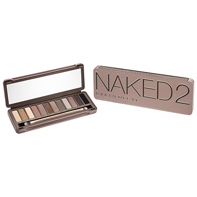

We created these pants to be a no-fuss tight for our yoga practice, but we couldn't stop wearing them! The second-skin fit of the Wunder Under makes it easy to check our alignment and the four-way stretch makes them so comfortable we want to wear them every day.Read more...

The most anticipated sequel of the decade. Naked2 has 12 pigment-rich, taupe and greige neutral eyeshadows. Our palette proves once again, neutral is anything but boring, (and is downright sexy when worn Naked).Read more...